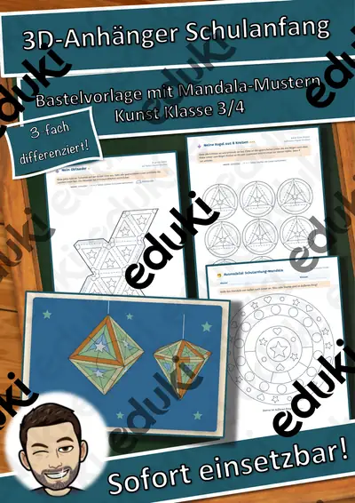
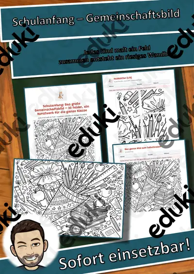

Schulanfang und Klassengemeinschaft: Arbeitsblätter für Klasse 1–4 (Sachunterricht)
Der Schulanfang prägt das Klima eines ganzen Jahres. Rituale, Regeln und Klassengemeinschaft werden in den ersten Wochen aufgebaut und später immer wieder gepflegt.
Im Unterricht begegnen den Lernenden zuerst Klassenregeln und Stundenplan. Wer weitergeht, behandelt Schulanfang, Klassentier, Gruppenzugehörigkeit sowie Übergang.
Je nach Bundesland variiert die genaue Einordnung; üblich ist das Fach Sachunterricht in der Grundschule. Die Kinder kennen Regeln und Rituale und fühlen sich in der Gruppe sicher.
Für den Einstieg in Schulanfang und Klassengemeinschaft bieten sich Aufgaben zu Klassenregeln an, zum Üben solche zu Stundenplan und Schulanfang, zur Wiederholung vor einer Lernkontrolle ein Blick auf Übergang. Die Lösungen liegen bei, sodass im Unterricht niemand nachschlagen muss. Zur Differenzierung eignen sich die Lesespurgeschichten mit ihren drei Niveaustufen.
Aus unserem Katalog gehören 30 Materialien zu diesem Thema, darunter Klassen-Werkstatt: Klassenregeln-Plakate, Klassentier-Paket Fuchs: Sachtext in 3 Stufen und Klassentier-Paket Eule: Sachtext in 3 Stufen. Der Bestand umfasst 1 Lesespurgeschichte, 1 Lesespaziergang, 1 Bastelvorlage und 1 Lückentext mit Hörverstehen und reicht über Klasse 1–5. Ein gemeinsam erarbeiteter Regelkatalog, den alle unterschreiben, wird deutlich besser eingehalten als vorgegebene Regeln.
Das gehört zum Thema
Passende Arbeitsblätter und Materialpakete

Klassen-Werkstatt: Klassenregeln-Plakate – Plus-Paket, Klasse 1–4

Klassentier-Paket Fuchs: Sachtext in 3 Stufen, Klassendienste, Lobkarten, Klasse 1–4

Klassentier-Paket Eule: Sachtext in 3 Stufen, Klassendienste, Lobkarten, Klasse 1–4

Klassentier-Paket Löwe: Sachtext in 3 Stufen, Klassendienste, Lobkarten, Klasse 1–4

3D-Anhänger Schulanfang – Oktaeder, Diamant und Kugel zum Ausmalen und Basteln, 3-fach differenziert (Klasse 3/4)

Lesespaziergang DaZ: Im Klassenzimmer – Wortschatz mit Rätseln, 3-fach differenziert (Klasse 1–4)

Tanzen in der Schule – Rhythmus und Bewegung – Lesespurgeschichte mit Rätselaufgaben (Klasse 5)

DaZ-Wortschatz In der Schule – differenziert A1/A2/B1: Hörszene (QR), Lückentexte, Rollenspiel

Schulanfang: Das große Gemeinschaftsbild – 30 Felder, ein Kunstwerk für die ganze Klasse

Der erste Schultag in Klasse 1: Baukasten für Lehrkräfte – kostenlos

Memory: Schule und Klassenzimmer – Bild-Wort-Spiele – Klasse 1–4

Domino: Schule und Klassenzimmer – Bild-Wort-Spiele – Klasse 1–4

Himmel und Hölle: Schule und Klassenzimmer – Himmel und Hölle – Klasse 1–4

Wortgitter-Suchsel: Schule und Klassenzimmer – Wortgitter – Klasse 1–4

Klammerkarten: Schule und Klassenzimmer – Klammerkarten – Klasse 1–4

Wort-Bild-Karten: Schule und Klassenzimmer – Wort-Bild-Karten – Klasse 1–4

Lesen, Malen und Kleben: Schule und Klassenzimmer – Lesen und Malen – Klasse 1–4

Ich habe, wer hat? Schule und Klassenzimmer – Lese-Schleifen – Klasse 1–4

Sprechanlässe: Schule und Klassenzimmer – Sprechanlässe – Klasse 1–4

Klassen-Werkstatt: Klassenregeln-Plakate – kostenlos, Klasse 1–4

Wortspiele: Sag es nicht! Schule und Klassenzimmer – Klasse 2–4

Feriengrüße Fuchs: Tierbande Klassentier, Schreibanlass in 3 Stufen

Gruppenschilder Fuchs: Tierbande Klassentier mit Rollenkarten, Klasse 1–4

Feriengrüße Eule: Tierbande Klassentier, Schreibanlass in 3 Stufen
Weitere 6 Materialien zum Thema im Material-Finder.
Häufige Fragen
Für welche Klassenstufe passen die Arbeitsblätter zu Schulanfang und Klassengemeinschaft?
Die 30 Materialien zu diesem Thema sind für Klasse 1–5 ausgelegt, die meisten davon für Klasse 2. Einzelne Titel lassen sich mit Anpassung auch eine Stufe darunter oder darüber einsetzen.
Welche Inhalte decken die Materialien zu Schulanfang und Klassengemeinschaft ab?
Inhaltlich reicht die Auswahl von Klassenregeln über Stundenplan und Schulanfang bis zu Gruppenzugehörigkeit; Details stehen bei den einzelnen Materialien.
Wie setze ich Schulanfang und Klassengemeinschaft im Unterricht ein?
Beginnen Sie mit einem Einstieg zu Klassenregeln und ergänzen Sie nach Bedarf. Ein gemeinsam erarbeiteter Regelkatalog, den alle unterschreiben, wird deutlich besser eingehalten als vorgegebene Regeln.
Mehr Material nach Fach und Klasse
Verwandte Lehrplanthemen
- Vögel und Vogelzug (Sachunterricht, Klasse 1–6)
- Basteln, Falten und Werken (Kunst, Klasse 1–6)
- Bauernhof und Nutztiere (Sachunterricht, Klasse 1–4)
- Berufe und Berufswahl (Sachunterricht, Klasse 1–10)
- DaZ: Wortschatz für den Alltag (DaZ/DaF, Klasse 1–8)